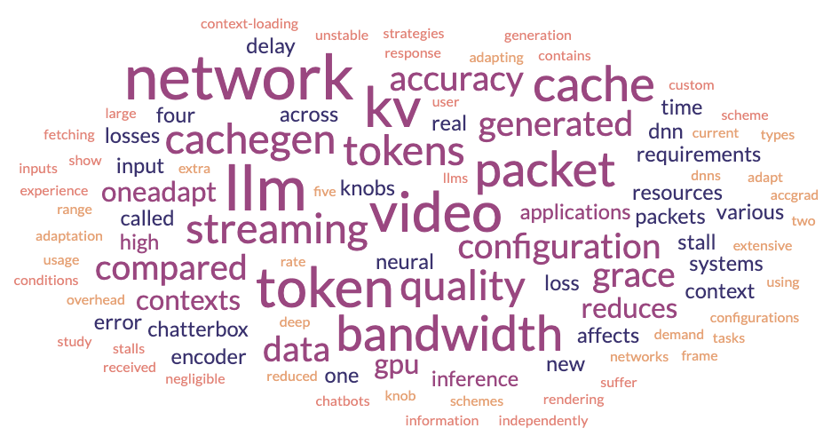

We are a research group at the University of Chicago, led by Prof. Junchen Jiang and located at John Crerar Library.
We work on machine learning for performance improvements in across different hardware and software systems. In this area, we have tackle areas in video streaming systems, tradtional networking systems like datacenters and satellite networks. We also work on building efficient systems for serving the latest applications such as Large Language Model (LLM) inference by improving for both lower latency and user perceived quality.
